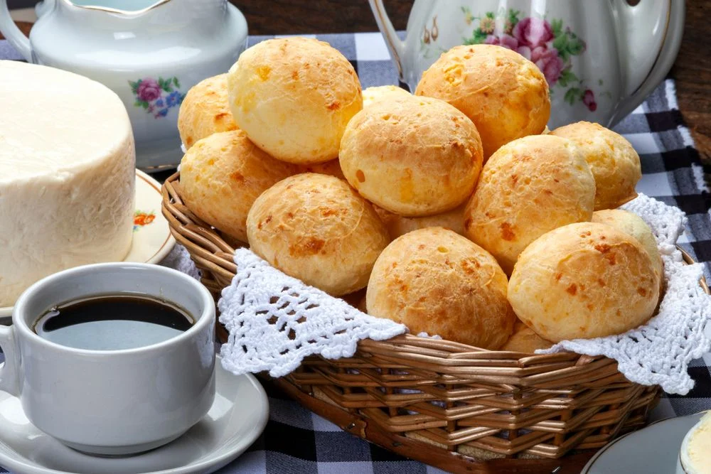

Popular Brazilian Recipes
Feijoada

A delicious black bean stew that's a Brazilian classic. Follow our step-by-step guide to make this hearty dish.
View RecipeMoqueca

Moqueca is a flavorful Brazilian fish stew. Learn how to make this delightful seafood dish.
View RecipePão de Queijo
These cheese bread bites are incredibly addictive. Try our recipe for a taste of Brazil.
View Recipe